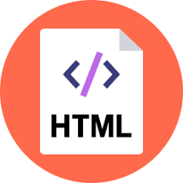
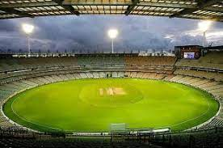
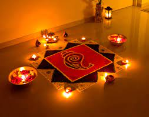
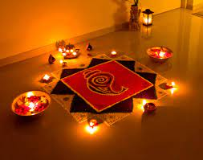
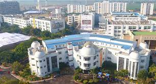
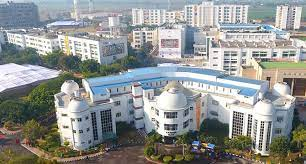

MERN stack is a software stack that includes four open-source technologies: (MongoDB, Express.js, React, and Node.js). These components provide an end-to-end framework for building dynamic web sites and web applications.
Among these technologies MongoDB is a database system, Node.js is a server-side runtime environment, Express.js is a web framework for Node.js and React is a client-side JavaScript library used for building user interfaces.Because all components of the MERN stack support programs that are written in JavaScript, MERN applications can be written in one programming language for both server-side and client-side execution environments
| College name | ID | STUDENTS | RANK |
|---|---|---|---|
| OSMANIA | 54 | 2345 | 1 |
| JNTU | 71 | 3456 | 2 |
| CBIT | 65 | 2000 | 3 |
| VASAVI | 34 | 2500 | 4 |
Cricket is the most popular sport in India by far,[4] and is played almost everywhere in the country.[5] The Board of Control for Cricket in India (BCCI) is the governing body of Indian cricket and conduct all domestic tournaments and select the members Indian national cricket team.Domestic competitions in India include the Ranji Trophy, the Duleep Trophy, the Vijay Hazare Trophy, the Deodhar Trophy, the Irani Trophy and the NKP Salve Challenger Trophy. The Indian Premier League, a Twenty20 tournament where various city franchises compete in a style similar to club football, is one of the biggest sporting leagues and the biggest cricketing league in the world. In addition, the BCCI conducts the Indian Premier League, a Twenty20 competition, which is also one of the biggest sports leagues in the world and the biggest cricket league in the world, respectively.

The Board of Control for Cricket in India (BCCI) is the governing body for cricket in India and is under the jurisdiction of Ministry of Youth Affairs and Sports, Government of India.[ It is an autonomous organisation and does not come under National sports federation of India.[5] The board was formed in December 1928 as a society, registered under the Tamil Nadu Societies Registration Act. BCCI is an autonomous body and does not review any grants or fundings from Sports ministry of India.[6] It is a consortium of state cricket associations, and the state associations select their representatives who in turn elect the BCCI Chief. Its headquarters is located at Wankhede Stadium in Mumbai, Maharashtra. Grant Govan was its first president and Anthony De Mello was first secretary.
| TEAM | RANK | RATINGS |
|---|---|---|
| india | 1 | 124 |
| newzealand | 2 | 120 |
| australia | 3 | 118 |
| england | 4 | 113 |
A festival is an event ordinarily celebrated by a community and centering on some characteristic aspect of that community and its religion or cultures. It is often marked as a local or national holiday, mela, or eid. A festival constitutes typical cases of glocalization, as well as the high culture-low culture interrelationship.[1] Next to religion and folklore, a significant origin is agricultural. Food is such a vital resource that many festivals are associated with harvest time. Religious commemoration and thanksgiving for good harvests are blended in events that take place in autumn, such as Halloween in the northern hemisphere and Easter in the southern.
Festivals often serve to fulfill specific communal purposes, especially in regard to commemoration or thanking to the gods, goddesses or saints: they're called patronal festivals. They may also provide entertainment, which was particularly important to local communities before the advent of mass-produced entertainment. Festivals that focus on cultural or ethnic topics also seek to inform community members of their traditions; the involvement of elders sharing stories and experience provides a means for unity among families.
 

A Bachelor of Technology (Latin Baccalaureus Technologiae, commonly abbreviated as B.Tech. or BTech; with honours as B.Tech. (Hons.)) is an undergraduate academic degree conferred after the completion of a three-year, a four-year or a five-year program of studies at an accredited university or accredited university-level institution. The degree is conferred in several countries, including the Commonwealth of Nations, the United States and elsewhere.For admissions, the most common BTech entrance examinations are JEE Main and JEE Advanced. Along with these national level entrance examinations, there are many state and private level entrance examinations that the students can attempt for admission to the course. The basic eligibility criteria for BTech is class 12 Physics, Chemistry and Mathematics. However, there are additional criteria in every entrance exam and institute. Some of the institutes also conduct admission to their courses on merit basis i.e. based on marks scored by candidates in their class 12 board exam
 

| PARTICULARS | DETAILS |
|---|---|
| Name of degree | Bachelor of Technology |
| Degree level | Undergraduate |
| Course duration | 4 years |
| Annual course fee | INR 2 to 5 lakh |